Gathering Strength, Discussing the Future: UCACF Impact Reception Successfully Held
2026年6月29日，在第五届美国华人大会举办期间，UCA Community Foundation（UCACF）影响力招待会于拉斯维加斯凯撒宫圆满举行。UCACF董事会成员、项目评审委员会成员、捐赠人、受资助机构代表及社区领袖齐聚一堂，共同回顾基金会近年来走过的公益历程，分享社区项目带来的真实改变，并围绕UCACF未来的发展方向展开交流。
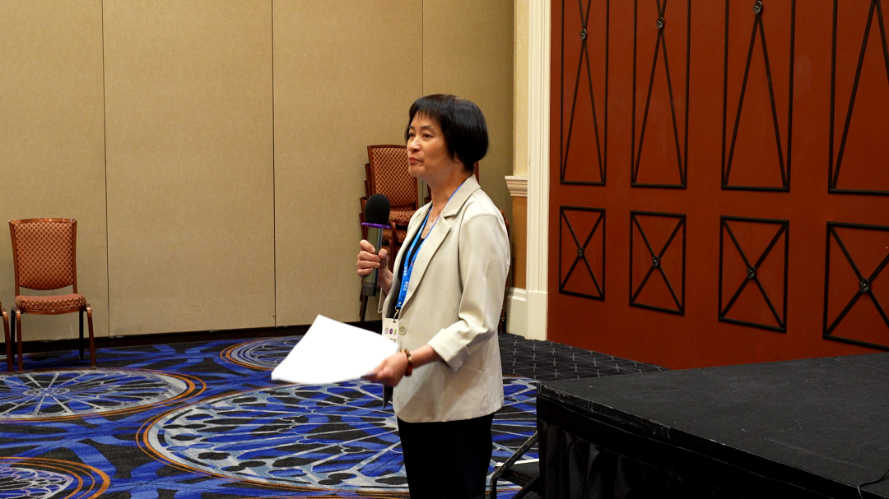
正如UCACF执行委员会主席 Sharon Chang 在邀请函中所写："我们最大的力量来自像您这样的合作伙伴——与我们共同致力于赋能华裔美国社区的引领者。" 这场招待会不仅是一次久违的线下相聚，也是对UCACF与社区伙伴过去四年共同成果的集中呈现。
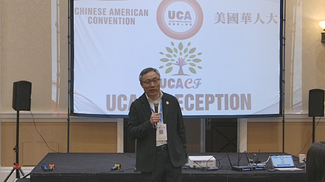
On June 29, 2026, during the Fifth United Chinese Americans Convention, the UCA Community
Foundation (UCACF) successfully held its Impact Reception at Caesars Palace in Las Vegas. UCACF
board members, grant review committee members, donors, grantee representatives, and community
leaders gathered together to look back on the Foundation's charitable journey in recent years,
share the real change community projects have brought about, and discuss UCACF's future direction.
As UCACF Executive Committee Chair Sharon Chang wrote in the invitation letter: "Our greatest
strength comes from partners like you — leaders who share our commitment to empowering the Chinese
American community." The reception was more than a long-awaited in-person gathering; it was also a
comprehensive showcase of what UCACF and its community partners have accomplished together over the
past four years.
从一万美元起步，让社区想法得到第一份支持 | Starting From $10,000: Giving Community Ideas Their First Support
董事会主席Gene Chang首先回顾了UCACF的创立历程。2021年底，团队萌生了设立社区基金的想法，希望为各地华人社区组织提供更直接的资金支持。基金最早的一笔约一万美元捐款，来自疫情期间的一场线上春节庆祝活动。2022年，社区基金开始试运行，并逐步发展为今天的UCACF。
Gene Chang将UCACF比作社区公益项目的"天使投资人"，通过500至5,000美元的微型资助，为有潜力的项目提供启动资金，帮助社区中的新想法迈出第一步。他表示，来自地方社区的积极反馈，让他更加确信这是一项值得长期投入的事业。
展望未来，他希望UCACF持续扩大申请与资助规模，让全美50个州的华人社区都有机会获得支持，并在未来五年内逐步发展为拥有稳定长期资金来源的捐赠型基金会。
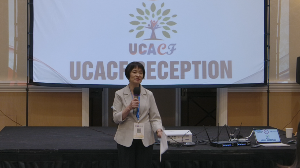
Board Chair Gene Chang began by recounting the founding of UCACF. In late 2021, the team first
conceived the idea of establishing a community fund to provide more direct financial support to
Chinese community organizations across the country. The fund's very first donation, roughly
$10,000, came from an online Lunar New Year celebration held during the pandemic. In 2022, the
community fund began operating on a pilot basis and gradually grew into what is now UCACF.
Gene Chang described UCACF as an "angel investor" for community public-service projects, offering
micro-grants of $500 to $5,000 to give promising projects the seed funding they need to take their
first step. He said the enthusiastic feedback from local communities has only strengthened his
conviction that this is a cause worth long-term investment.
Looking ahead, he hopes UCACF will continue expanding the scale of its applications and grants so
that Chinese communities in all 50 states have the opportunity to receive support, and that within
the next five years the Foundation will gradually grow into an endowed foundation with stable,
long-term funding sources.
每两周一次评审，让每一笔资助更加透明 | Biweekly Reviews for Greater Grant Transparency
执行委员会主席Sharon随后介绍了UCACF的申请评审与项目跟进机制。目前，基金会共有16名评审委员会成员，每两周集中审议新收到的申请。讨论结束后，成员独立进行线上投票并提出建议资助金额，达到规定参与及支持比例后，项目方可获批。
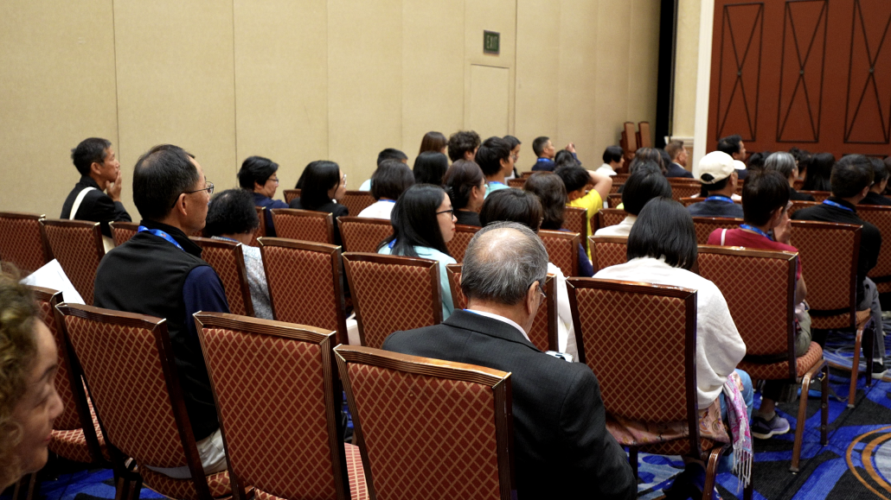
对于暂未达到通过标准、但仍具发展潜力的项目，委员会可能安排第二次评审，或主动联系申请机构补充信息、完善方案。
Sharon也提醒受资助机构及时提交结项报告，包括项目支出、活动内容、照片和视频。这些资料既有助于评估项目成果，也能让捐赠人清晰看到项目所带来的真实影响。
现场公布的数据显示，自2022年成立以来，UCACF累计收到344份项目申请，批准其中221份，累计发放资助约43.6万美元。仅2026年前六个月，基金会便收到96份申请，其中81份获得批准。
截至活动举行时，申请已来自全美34个州。UCACF计划在未来继续优化申请与评审流程，邀请更多州及主要城市的社区代表加入评审委员会，并探索通过数据分析和人工智能工具提高工作效率。
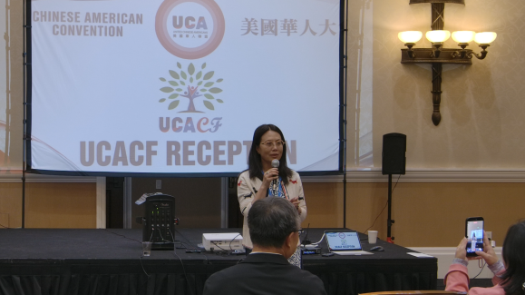
Executive Committee Chair Sharon then walked guests through UCACF's application review and project
follow-up process. The Foundation currently has 16 members on its grant review committee, who meet
every two weeks to review newly received applications. After discussion, members vote
independently online and propose recommended funding amounts; a project is approved once it meets
the required thresholds for participation and support.
For projects that do not yet meet the approval bar but still show potential, the committee may
schedule a second review or proactively reach out to the applicant organization for additional
information or a refined proposal.
Sharon also reminded grantee organizations to submit their closing reports promptly, including
project expenditures, activity details, photos, and videos. This material not only helps evaluate
project outcomes but also allows donors to clearly see the real impact their support has made.
Data shared at the event showed that since its founding in 2022, UCACF has received 344 project
applications in total and approved 221 of them, distributing approximately $436,000 in grants. In
just the first six months of 2026 alone, the Foundation received 96 applications, of which 81 were
approved.
As of the event, applications had come in from 34 states across the country. UCACF plans to
continue refining its application and review process, invite community representatives from more
states and major cities to join the review committee, and explore using data analytics and AI
tools to improve efficiency.
共同"干活"，共同创造改变 | Working Together, Creating Change Together
多位董事会及评审委员会成员也分享了参与UCACF的原因与感受。
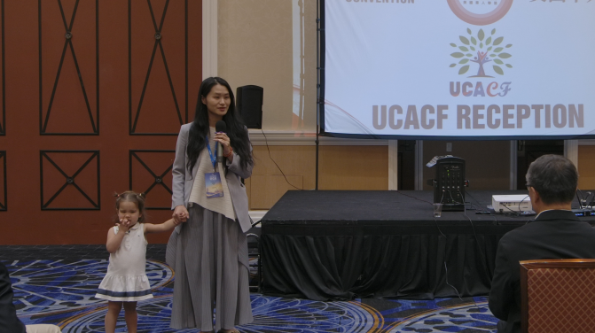
副主席兼评审委员会主席葛倩表示，理事和委员的头衔，归根结底都是为了更好地"干活"。她鼓励正在构思项目、准备申请或对评审标准有疑问的社区组织主动与基金会交流。
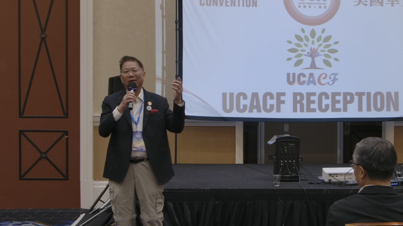
财务主管Dr. Louise Ruihua Liu从第一代华裔移民和母亲的角度表示，希望通过志愿服务，为下一代创造更多领导力培养的机会，让年轻人未来能够为社区带来改变。
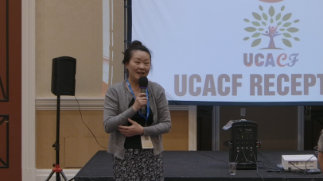
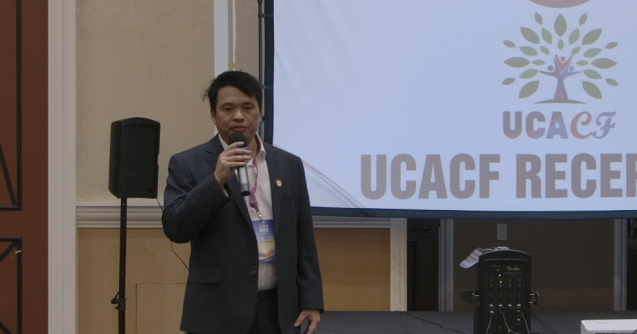
Charles Tsui和Shirley Liu都提到，UCACF团队几乎每两周便要召开会议，审阅申请、讨论项目并处理后续工作。虽然工作繁忙，但团队成员的投入都源于对社区的热情。黄璐将参与基金会形容为"一种快乐和荣幸"，Shirley则表示，UCACF为地方社区带来的影响令她深感自豪。
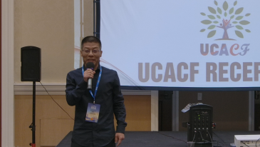
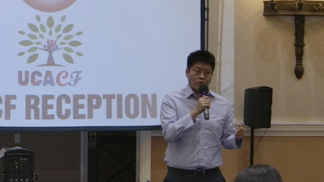
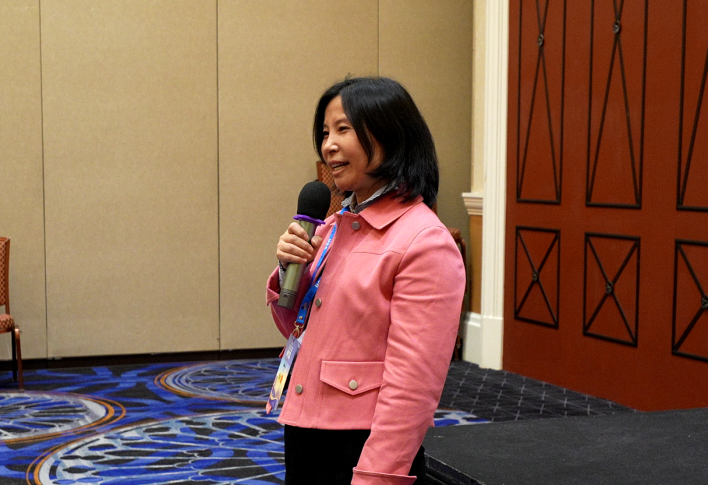
林青、董校铭和Simon Chan共同强调了扩大基金会影响力的重要性。他们鼓励更多社区组织提出项目、申请资助，也希望大家帮助传播UCACF的信息，让更多地区的华人社区了解这一资源。
董校铭表示，自己参与UCACF多年，亲眼看到基金会为社区带来的"巨大改变"；Simon Chan则指出，许多基层组织虽然拥有很好的想法，却很难从传统渠道获得资金，而UCACF让它们能够以更便捷、更友好的方式获得启动支持。
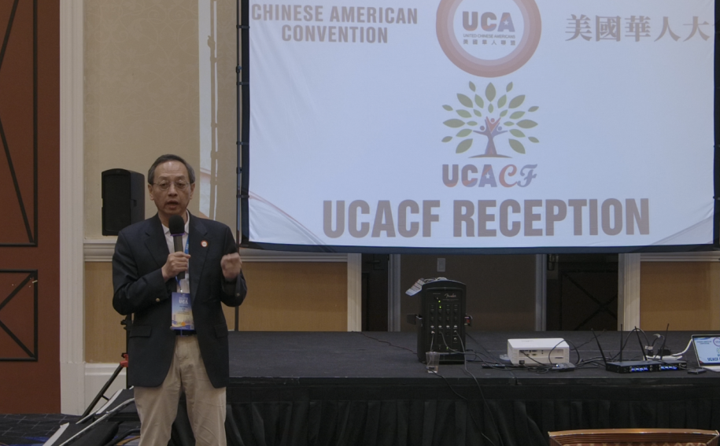
来自波士顿的齐飞表示，自己被UCACF的使命和团队氛围所感染，因此加入志愿工作。他也希望未来能够投入更多时间和力量，为基金会承担更多工作。
UCA理事长王华则从UCA整体使命的角度指出，UCA希望成为连接全美华人社区组织的全国性联盟，而UCACF正在为这些组织提供推动项目落地所需要的"血液与能量"。
Vice Chair and Review Committee Chair Qian Ge said that, at the end of the day, every board and
committee title exists so people can better "get the work done." She encouraged community
organizations that are shaping a project, preparing an application, or have questions about the
review criteria to reach out to the Foundation directly.
Treasurer Dr. Louise Ruihua Liu spoke from her perspective as a first-generation Chinese American
immigrant and a mother, saying she hopes her volunteer work will create more leadership development
opportunities for the next generation, so young people can go on to make a difference in their
communities.
Charles Tsui and Shirley Liu both noted that the UCACF team meets almost every two weeks to review
applications, discuss projects, and handle follow-up work. Despite the heavy workload, every team
member's commitment comes from genuine passion for the community. Huang Lu described being part of
the Foundation as "a joy and an honor," while Shirley said she feels deep pride in the impact
UCACF has had on local communities.
Qing Lin, Xiaoming Dong, and Simon Chan together emphasized the importance of expanding the
Foundation's reach. They encouraged more community organizations to propose projects and apply for
funding, and asked everyone to help spread the word about UCACF so that Chinese communities in more
regions can learn about this resource.
Xiaoming Dong said that after years of involvement with UCACF, he has personally witnessed the
"tremendous change" the Foundation has brought to communities. Simon Chan pointed out that many
grassroots organizations have great ideas but struggle to secure funding through traditional
channels, and UCACF gives them a more accessible, friendlier way to get startup support.
Fei Qi from Boston said he was drawn to volunteer after being inspired by UCACF's mission and the
spirit of the team. He hopes to devote more time and energy to taking on greater responsibilities
for the Foundation in the future.
UCA Chairman Hua Wang spoke from the perspective of UCA's broader mission, noting that UCA hopes to
become a national alliance connecting Chinese community organizations across the country, while
UCACF is providing the "blood and energy" these organizations need to bring their projects to
life.
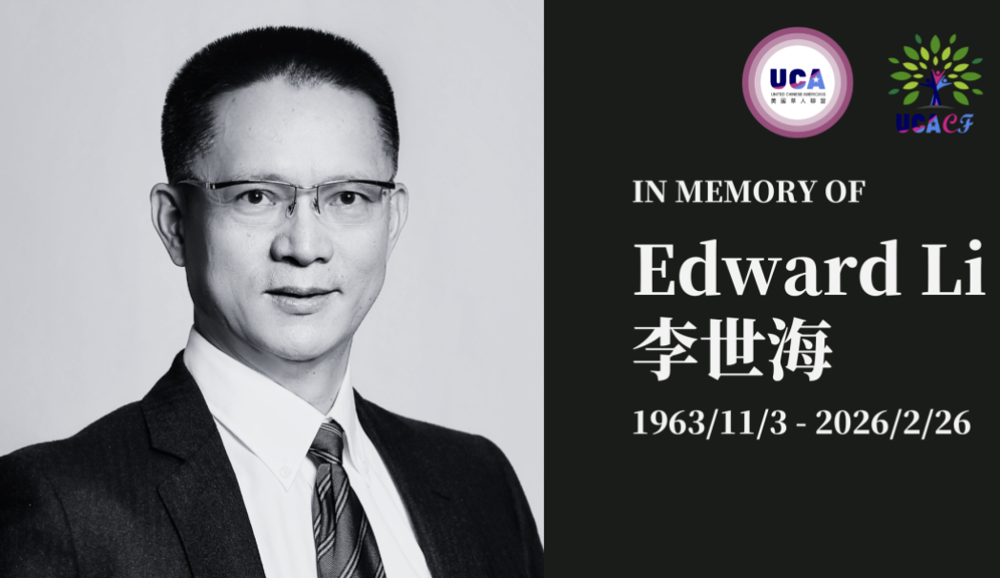
纪念长期支持社区的同行者 | Honoring a Longtime Community Supporter
活动中还有一个温暖而庄重的环节。UCACF团队特别纪念已故社区领袖及基金会重要支持者Edward Li，并邀请其夫人Jennifer发言。
Jennifer表示，支持UCA与UCACF一直是丈夫十分珍视的事业。当天亲眼看到基金会团队所开展的工作，她深受感动，并承诺未来将继续支持UCA与UCACF。
为纪念Edward Li对社区公益事业的投入，UCACF特别设立了一项纪念奖项，以延续他服务社区、支持公益的精神。
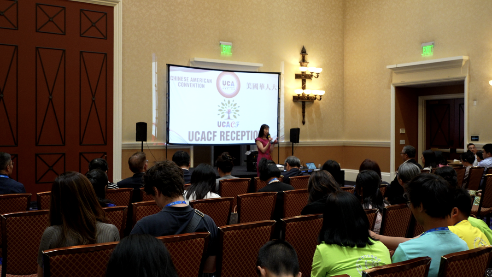
The event also included a warm and solemn moment. The UCACF team paid special tribute to the late
community leader and longtime Foundation supporter Edward Li, and invited his wife, Jennifer, to
speak.
Jennifer shared that supporting UCA and UCACF had always been a cause her husband deeply cherished.
Seeing firsthand the work the Foundation team carries out moved her deeply, and she pledged to
continue supporting UCA and UCACF going forward.
In memory of Edward Li's dedication to community service, UCACF has established a commemorative
award in his honor, to carry forward his spirit of serving the community and supporting public
good.
让受资助项目讲述真实影响 | Letting Grantees Tell Their Own Impact Stories
在理事会成员发言后，多家受资助机构代表依次上台，简要介绍项目进展，并分享UCACF资助为社区带来的实际帮助。参与分享的机构包括Chinese American Elected Officials Coalition、Margin of Victory Empowerment Foundation、New Legacy Cultural Center、CHEER、国际华语原创IP电影节、Asian Culture Association、New Jersey Chinese Teachers Association、Salt Lake Eastern Art Club以及I Heart and Eyes等。
这些项目涵盖公民参与、青年领导力、文化传承、教育资源、华人故事传播及人工智能人才培养等领域。代表们感谢UCACF及捐赠人的支持，并表示，基金会提供的启动资金不仅帮助项目顺利落地，也为新成立或由志愿者推动的社区组织带来了重要的鼓励与发展动力。
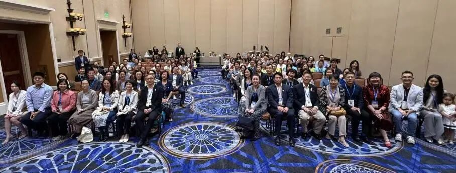
After the board members' remarks, representatives from several grantee organizations took the
stage one after another to briefly share their project updates and describe the real difference
UCACF funding has made in their communities. Organizations that took part included the Chinese
American Elected Officials Coalition, Margin of Victory Empowerment Foundation, New Legacy Cultural
Center, CHEER, the International Chinese Original IP Film Festival, Asian Culture Association, New
Jersey Chinese Teachers Association, Salt Lake Eastern Art Club, and I Heart and Eyes, among
others.
These projects span civic engagement, youth leadership, cultural heritage, educational resources,
sharing Chinese American stories, and AI talent development. The representatives thanked UCACF and
its donors for their support, noting that the Foundation's seed funding not only helped their
projects get off the ground but also provided crucial encouragement and momentum for newly formed
or volunteer-driven community organizations.
一个项目、一个连接、一个社区 | One Project, One Connection, One Community
分享结束后，全体嘉宾共同合影，随后进入餐叙与自由交流环节。来自全美各地的受助机构、捐赠人、志愿者和理事会成员继续面对面交流，分享项目经验、社区需求与未来合作的可能。
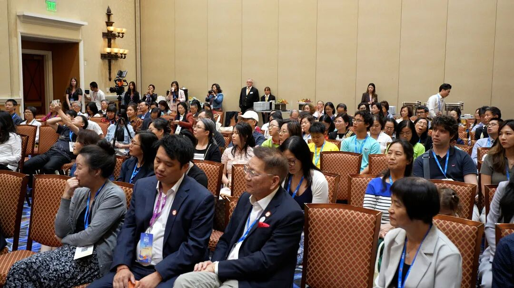
UCACF是美国华人联盟（UCA）旗下的非营利基金会，长期通过小额启动资助，支持公民权利、公民参与、青年领导力、中华文化传承、社区赋能，以及促进中美人民相互理解等领域的公益项目。
从最初的一笔一万美元捐款，到累计发放超过43万美元资助；从一次社区基金试运行，到连接全美34个州的公益网络，UCACF走过的每一步，都离不开理事、评审委员、捐赠人、志愿者和社区伙伴的共同参与。这场影响力招待会也让大家更加直观地看到，每一份支持如何一步步转化为社区中的真实改变。
我们也诚挚鼓励更多有爱心、有责任感的个人、企业和组织，积极向UCACF捐款、支持社区公益。无论是一笔小额善款，还是长期持续的支持，都有机会成为一个社区项目启动、成长和扩大影响的重要力量。
您的每一笔捐赠，UCACF都会尽最大努力认真使用，让有限的资源流向真正有需要、有潜力、有实际影响的项目，把每一份善意转化为看得见的社区改变。也期待更多朋友加入我们，与UCACF一起支持那些正在为社区努力的人和项目。
一个项目、一个连接、一个社区。您的支持，可能就是下一个好项目得以出发的第一步。让我们携手汇聚更多力量，让更多好的想法被看见、被支持、真正落地。
After the sharing session, all guests gathered for a group photo before moving into a dinner and
open networking session. Grantee organizations, donors, volunteers, and board members from across
the country continued to connect face to face, exchanging project experiences, community needs,
and possibilities for future collaboration.
UCACF is a nonprofit foundation under the United Chinese Americans (UCA), dedicated to supporting
public-service projects in civic rights, civic engagement, youth leadership, Chinese cultural
heritage, community empowerment, and mutual understanding between the peoples of China and the
United States through small-scale seed grants.
From a first donation of about $10,000 to more than $430,000 in grants distributed to date; from a
single pilot community fund to a public-service network connecting 34 states across the country —
every step of UCACF's journey has depended on the shared participation of its board members,
review committee members, donors, volunteers, and community partners. The Impact Reception gave
everyone a clearer, more direct look at how each act of support is translated, step by step, into
real change within communities.
We warmly encourage more caring and responsible individuals, businesses, and organizations to
donate to UCACF and support community public service. Whether a small one-time gift or ongoing
sustained support, every contribution has the potential to become an important force in helping a
community project launch, grow, and expand its impact.
UCACF will do its utmost to put every donation to good use, directing limited resources toward
projects that are truly in need, full of potential, and capable of real impact — turning every act
of goodwill into visible change in the community. We also hope more friends will join us in
supporting the people and projects working hard for their communities.
One project, one connection, one community. Your support could be the very first step that helps
the next great project get off the ground. Let's come together to gather more strength, so that
more good ideas can be seen, supported, and truly brought to life.